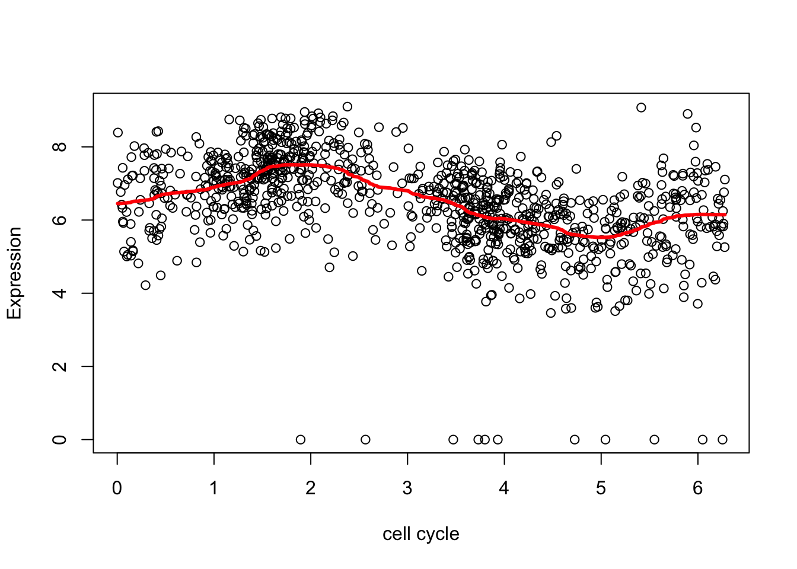

Cell cycle genes
Matthew Stephens
April 9, 2018
Last updated: 2021-04-13
Checks: 7 0
Knit directory: stat34800/analysis/
This reproducible R Markdown analysis was created with workflowr (version 1.6.2). The Checks tab describes the reproducibility checks that were applied when the results were created. The Past versions tab lists the development history.
Great! Since the R Markdown file has been committed to the Git repository, you know the exact version of the code that produced these results.
Great job! The global environment was empty. Objects defined in the global environment can affect the analysis in your R Markdown file in unknown ways. For reproduciblity it’s best to always run the code in an empty environment.
The command set.seed(20180411) was run prior to running the code in the R Markdown file. Setting a seed ensures that any results that rely on randomness, e.g. subsampling or permutations, are reproducible.
Great job! Recording the operating system, R version, and package versions is critical for reproducibility.
Nice! There were no cached chunks for this analysis, so you can be confident that you successfully produced the results during this run.
Great job! Using relative paths to the files within your workflowr project makes it easier to run your code on other machines.
Great! You are using Git for version control. Tracking code development and connecting the code version to the results is critical for reproducibility.
The results in this page were generated with repository version f5b651b. See the Past versions tab to see a history of the changes made to the R Markdown and HTML files.
Note that you need to be careful to ensure that all relevant files for the analysis have been committed to Git prior to generating the results (you can use wflow_publish or wflow_git_commit). workflowr only checks the R Markdown file, but you know if there are other scripts or data files that it depends on. Below is the status of the Git repository when the results were generated:
Ignored files:
Ignored: .Rproj.user/
Ignored: analysis/figure/
Note that any generated files, e.g. HTML, png, CSS, etc., are not included in this status report because it is ok for generated content to have uncommitted changes.
These are the previous versions of the repository in which changes were made to the R Markdown (analysis/cell_cycle.Rmd) and HTML (docs/cell_cycle.html) files. If you’ve configured a remote Git repository (see ?wflow_git_remote), click on the hyperlinks in the table below to view the files as they were in that past version.
| File | Version | Author | Date | Message |
|---|---|---|---|---|
| Rmd | f5b651b | Matthew Stephens | 2021-04-13 | workflowr::wflow_publish(“cell_cycle.Rmd”) |
| html | f2098f0 | stephens999 | 2018-05-21 | Build site. |
| Rmd | d63b9eb | stephens999 | 2018-05-21 | workflowr::wflow_publish(“svd_zip.Rmd”) |
| Rmd | 3d82c11 | stephens999 | 2018-04-11 | update cell cycle example to include circularity of trend filtering |
| Rmd | 463d7d9 | stephens999 | 2018-04-11 | update to include trend filter |
| Rmd | 8b80a72 | stephens999 | 2018-04-09 | add cell cycle example |
Load Packages
You will need to have genlasso, wavethresh and smashr installed to run. The first two are on CRAN. The smashr package can be installed from github using the following code:
devtools::install_github("stephenslab/smashr")library(wavethresh)Loading required package: MASSWarning: package 'MASS' was built under R version 3.6.2WaveThresh: R wavelet software, release 4.6.8, installedCopyright Guy Nason and others 1993-2016Note: nlevels has been renamed to nlevelsWTlibrary(genlasso)Warning: package 'genlasso' was built under R version 3.6.2Loading required package: MatrixLoading required package: igraph
Attaching package: 'igraph'The following objects are masked from 'package:stats':
decompose, spectrumThe following object is masked from 'package:base':
unionlibrary(smashr)Some Cell Cycle Data
The data come from a recent experiment performed in the Gilad lab by Po Tung, in collaboration with Joyce Hsiao and others. This was an early look at these data (later published in (https://genome.cshlp.org/content/30/4/611)).
The data are measuring the activity of 10 genes that may or may not be involved in the “cell cycle”, which is the process cells go through as they divide. (We have data on a large number of genes, but Joyce has picked out 10 of them for us to look at.) Each gene is measured in many single cells, and we have some independent (but noisy) measurement of where each cell is in the cell cycle.
d = readRDS("../data/cyclegenes.rds")
dim(d)[1] 990 11Here each row is a single cell. The first column (“theta”) is an estimate of where that cell is in the cell cycle, from 0 to 2pi. (Note that we don’t know what stage of the cell cycle each point in the interval corresponds to - so there is no guarantee that 0 is the “start” of the cell cycle. Also, because of the way these data were created we don’t know which direction the cell cycle is going - it could be forward or backward.) Then there are 10 columns corresponding to 10 different genes.
I’m going to order the rows by cell cycle (theta, first column) as this will make things much easier later.
# order the data
o = order(d[,1])
d = d[o,]
plot(d$theta)
| Version | Author | Date |
|---|---|---|
| f2098f0 | stephens999 | 2018-05-21 |
Here we just plot 8 genes to get a sense for the data:
par(mfcol=c(2,2))
for(i in 1:4){
plot(d$theta, d[,(i+1)],pch=".",ylab="gene expression",xlab="cell cycle location")
}
| Version | Author | Date |
|---|---|---|
| f2098f0 | stephens999 | 2018-05-21 |
par(mfcol=c(2,2))
for(i in 1:4){
plot(d$theta, d[,(i+5)],pch=".",ylab="gene expression",xlab="cell cycle location")
}The question we want to answer is this: which genes show greatest evidence for varying in their expression through the cell cycle? For now what we really want is a filter we can apply to a large number of genes to pick out the ones that look most “interesting”. Later we might want a more formal statistical measure of evidence.
Our current idea is to try “smoothing” these data, and pick out genes where the change in the mean over theta is most variable (in some sense). The extreme would be if the smoother fits a horizontal line - that indicates no variability with theta, so those genes are not interesting to us.
Trend filtering
Here we will apply trend filtering to smooth these data. Trend filtering, at its simplest, applies L1 regularization to the changes in mean from one observation to the next. (The extreme would be no changes in any of these means, so a flat line.) It is implemented in the “genlasso” package.
d2.tf = trendfilter(d[,2],ord = 1)
d2.tf.cv = cv.trendfilter(d2.tf) # performs 5-fold CVFold 1 ... Fold 2 ... Fold 3 ... Fold 4 ... Fold 5 ... plot(d[,1],d[,2],xlab="cell cycle",ylab="expression")
lines(d[,1],predict(d2.tf, d2.tf.cv$lambda.min)$fit,col=2,lwd=3)
| Version | Author | Date |
|---|---|---|
| f2098f0 | stephens999 | 2018-05-21 |
This fit is a bit on the “spiky” side in places. We can get a smoother fit by using a higher order filter. The details are too much to include here, but basically instead of shrinking first order differences it shrinks things that also measure differences with neighbors a bit further apart (2nd order).
d2.tf2 = trendfilter(d[,2],ord = 2)
d2.tf2.cv = cv.trendfilter(d2.tf2) # performs 5-fold CVFold 1 ... Fold 2 ... Fold 3 ... Fold 4 ... Fold 5 ... plot(d[,1],d[,2],xlab="cell cycle",ylab="expression")
lines(d[,1],predict(d2.tf, d2.tf.cv$lambda.min)$fit,col=2,lwd=3)
lines(d[,1],predict(d2.tf2, d2.tf2.cv$lambda.min)$fit,col=3,lwd=3)
| Version | Author | Date |
|---|---|---|
| f2098f0 | stephens999 | 2018-05-21 |
And here we try another gene that maybe shows less evidence for variability.
d7.tf2 = trendfilter(d[,7],ord = 2)
d7.tf2.cv = cv.trendfilter(d7.tf2) # performs 5-fold CVFold 1 ... Fold 2 ... Fold 3 ... Fold 4 ... Fold 5 ... plot(d[,1],d[,7],xlab="cell cycle",ylab="expression")
lines(d[,1],predict(d7.tf2, d7.tf2.cv$lambda.min)$fit,col=3,lwd=3)Dealing with the circularity
Because the \(x\) axis here is cyclical, the value of \(E(Y|x)\) near \(x=0\) should be similar to the value near \(x=2pi\). But trend filtering does not know this. We can encourage this behaviour by duplicating the data using a translation. (Note this is different than reflecting it about the boundaries).
Here is an example:
yy = c(d[,2],d[,2],d[,2]) ## duplicated data
xx = c(d[,1]-2*pi, d[,1], d[,1]+2*pi) # shifted/translated x coordinates
yy.tf2 = trendfilter(yy,ord = 2)
yy.tf2.cv = cv.trendfilter(yy.tf2) # performs 5-fold CVFold 1 ... Fold 2 ... Fold 3 ... Fold 4 ... Fold 5 ... plot(xx,yy,xlab="cell cycle",ylab="expression")
lines(xx,predict(yy.tf2, yy.tf2.cv$lambda.min)$fit,col=3,lwd=3)
| Version | Author | Date |
|---|---|---|
| f2098f0 | stephens999 | 2018-05-21 |
# plot only a single version of data
include = c(rep(FALSE,length(d[,2])), rep(TRUE, length(d[,2])), rep(FALSE, length(d[,2])))
plot(xx[include],yy[include],xlab="cell cycle",ylab="expression", main="trend filtering with circular fit")
lines(xx[include],predict(yy.tf2, yy.tf2.cv$lambda.min)$fit[include],col=3,lwd=3)Wavelets
Here we will apply wavelets to smooth these data.
To apply wavelets we need the data to be a power of 2. Also we need the data to be ordered in terms of theta. We’ll subset the data to 512 elements here, and order it:
# subset the data
set.seed(1)
subset = sort(sample(1:nrow(d),512,replace=FALSE))
d.sub = d[subset,]Here we do the Haar wavelet by specifying family="DaubExPhase",filter.number = 1 to the discrete wavelet transform function wd. The plot shows the wavelet transformed values, separately at each resolution.
wds <- wd(d.sub[,2],family="DaubExPhase",filter.number = 1)
plot(wds)
| Version | Author | Date |
|---|---|---|
| f2098f0 | stephens999 | 2018-05-21 |
[1] 12.31629 12.31629 12.31629 12.31629 12.31629 12.31629 12.31629 12.31629
[9] 12.31629To illustrate the idea behind wavelet shrinkage we use the policy “manual” to shrink all the high-resolution coefficients (levels 4-8) to 0.
wtd <- threshold(wds, levels = 4:8, policy="manual",value = 99999)
plot(wtd) 
| Version | Author | Date |
|---|---|---|
| f2098f0 | stephens999 | 2018-05-21 |
[1] 12.31629 12.31629 12.31629 12.31629 12.31629 12.31629 12.31629 12.31629
[9] 12.31629Now undo the wavelet transform on the shrunken coefficients
fd <- wr(wtd) #reconstruct
plot(d.sub$theta,d.sub[,2],xlab="cell cycle", ylab = "Expression")
lines(d.sub$theta,fd,col=2,lwd=3)
| Version | Author | Date |
|---|---|---|
| f2098f0 | stephens999 | 2018-05-21 |
The estimate here is a bit “jumpy”, due to the use of the Haar wavelet and the rather naive hard thresholding. We can make it less “jumpy” by using a “less step-wise” wavelet basis
wds <- wd(d.sub[,2],family="DaubLeAsymm",filter.number = 8)
wtd <- threshold(wds, levels = 4:8, policy="manual",value = 99999)
fd <- wr(wtd) #reconstruct
plot(d.sub$theta,d.sub[,2],xlab="cell cycle", ylab = "Expression")
lines(d.sub$theta,fd,col=2,lwd=3)
| Version | Author | Date |
|---|---|---|
| f2098f0 | stephens999 | 2018-05-21 |
What happens if we use an Empirical Bayes thresholding rule?
The smashr package described here essentially does wavelet smoothing by Empirical Bayes. The prior is a mixture of normals, with different priors at different wavelet resolutions.
Notice that the outliers cause “problems”
library("smashr")
smash.res = smash(d.sub[,2])
plot(d.sub$theta,d.sub[,2],xlab="cell cycle", ylab = "Expression")
lines(d.sub$theta,smash.res,col=2,lwd=3)
| Version | Author | Date |
|---|---|---|
| f2098f0 | stephens999 | 2018-05-21 |
Here we removed the outliers (actually setting them to the mean) to avoid this problem:
xx = ifelse(d.sub[,2]<2,mean(d.sub[,2]),d.sub[,2])
smash.res = smash(xx)
plot(d.sub$theta,d.sub[,2],xlab="cell cycle", ylab = "Expression")
lines(d.sub$theta,smash.res,col=2,lwd=3)
Dealing with the circularity
Note that the default in smashr is to assume the data are periodic on their region of definition - that is, circular. So we don’t have to do anything special here. It is taken care of!
sessionInfo()R version 3.6.0 (2019-04-26)
Platform: x86_64-apple-darwin15.6.0 (64-bit)
Running under: macOS 10.16
Matrix products: default
BLAS: /Library/Frameworks/R.framework/Versions/3.6/Resources/lib/libRblas.0.dylib
LAPACK: /Library/Frameworks/R.framework/Versions/3.6/Resources/lib/libRlapack.dylib
locale:
[1] en_US.UTF-8/en_US.UTF-8/en_US.UTF-8/C/en_US.UTF-8/en_US.UTF-8
attached base packages:
[1] stats graphics grDevices utils datasets methods base
other attached packages:
[1] smashr_1.2-7 genlasso_1.5 igraph_1.2.5 Matrix_1.2-18
[5] wavethresh_4.6.8 MASS_7.3-51.6
loaded via a namespace (and not attached):
[1] Rcpp_1.0.6 pillar_1.4.6 compiler_3.6.0 later_1.1.0.1
[5] git2r_0.27.1 workflowr_1.6.2 bitops_1.0-6 tools_3.6.0
[9] digest_0.6.27 evaluate_0.14 lifecycle_1.0.0 tibble_3.0.4
[13] lattice_0.20-41 pkgconfig_2.0.3 rlang_0.4.10 rstudioapi_0.13
[17] yaml_2.2.1 xfun_0.16 invgamma_1.1 stringr_1.4.0
[21] knitr_1.29 caTools_1.18.0 fs_1.5.0 vctrs_0.3.4
[25] rprojroot_1.3-2 grid_3.6.0 data.table_1.12.8 glue_1.4.2
[29] R6_2.4.1 rmarkdown_2.3 mixsqp_0.3-43 irlba_2.3.3
[33] ashr_2.2-51 magrittr_1.5 whisker_0.4 backports_1.1.10
[37] promises_1.1.1 ellipsis_0.3.1 htmltools_0.5.0 httpuv_1.5.4
[41] stringi_1.4.6 truncnorm_1.0-8 SQUAREM_2020.3 crayon_1.3.4